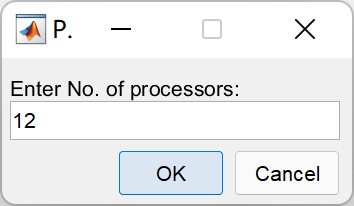
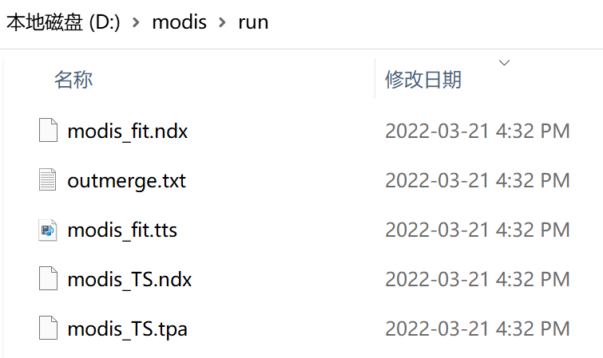
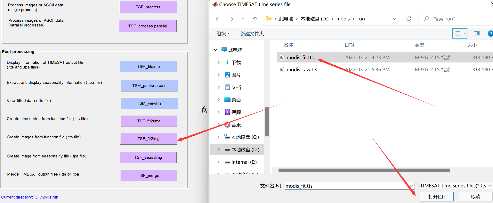

TIMESAT软件是由瑞典隆德大学的Lars Eklundh及瑞典马尔默大学的 Per Jönsson在大约20年前开发的遥感物候分析工具，被全球遥感界广泛使用。TIMESAT使用FORTRAN语言编写，该语言面向科学计算，相较于其他编程语言，其运算效率号称是最快的。
本页介绍利用TIMESAT软件和MODIS NDVI产品进行物候分析，包括：数据下载、数据准备、数据处理、结果制图、分析整个过程，详细英文教程可以参见TIMESAT用户手册。
MODIS NDVI 标准产品
NDVI是MODIS的标准产品之一，包括16天合成和月合成两种时间分辨率、250米/500米/1公里/0.05度四种空间分辨率，网址：https://modis.gsfc.nasa.gov/data/dataprod/mod13.php，其中MOD13来自上午星TERRA，MYD13来自下午星AQUA。
我们使用16天合成的1公里分辨率的 MOD13A2 v061
版产品为例进行实验，其详细介绍在：https://lpdaac.usgs.gov/products/mod13a2v061/.

数据获取途径有很多，我们使用AppEEARS

AppEEARS 数据下载流程
首先登录账户，点击菜单栏中的Extract →
Area，然后选择Start a new request。

选择一个感兴趣区域，可以利用交互式地图选取，这里我们用方框选取从北方草原到南方森林的一个长条地区作为实验区，选择这里纯粹是个人爱好，你也可以选取其他任何区域，但是要注意实验区的面积越大，你处理的数据量也就越大。给自己选定的区域一个名称，这里我们输入modis_course。

指定影像数据的开始时间和结束时间，这里我们选择2011年到2021年。
在Select the layers to include in the Sample对话框中，输入MOD13A2，找到Terra MODIS Vegetation Indices (NDVI & EVI) MOD13A2.061并选择。在图层中选择NDVI和pixel_reliability。

pixel_reliability为数据质量概要信息，可以用来过滤掉质量差的数据点（去噪），下图为MOD13用户手册中的介绍：

然后就可以点击提交了，之后从菜单栏的Explore里，可以看到你数据申请的处理状态，等到完成后(Done)，就可以下载了，我们需要NDVI和pixel_reliability两个数据。

如果下载过程因网络不稳定而中断了，可以利用搜索栏，选择未完成的文件继续下载。

数据预处理
下面我们将使用R编程，按照TIMESAT对输入数据的格式要求，对下载MODIS数据进行预处理。
文件组织
创建一个文件夹进行实验操作，其格式如下：

将MODIS
NDVI的tif文件拷贝到..\data\GeoTIFF\NDVI中，质量标识文件
pixel
reliability的tif文件拷贝到..\data\GeoTIFF\QA中。注意这两组数据应一一对应，以我们这个实验为例，NDVI和pixel
reliability分别有253个文件，从2011年到2021年，每年23个16天合成的数据。
影像数据格式转换
将下载的GeoTIFF数据转成二进制ENVI格式才能输入到TIMESAT中。ENVI软件的数据格式既是二进制+头文件(*.hdr，对二进制文件的解释)。
这里，我们用R代码进行格式转换。首先，打开RStudio，新建R
Script文件：

将以下代码粘贴到新建的R
Script文件中，并保存在Rcode文件夹下。注意根据你的实际情况修改文件路径。
#加载需要用的软件包
if (!require("tidyverse")) install.packages("tidyverse"); library(tidyverse)
if (!require("terra")) install.packages("terra"); library(terra)
# 获取tif数据文件的路径列表
tif_files <- list.files(path = "D:/modis/data/GeoTIFF",
pattern = ".tif",
full.names = TRUE,
recursive = TRUE)
# 准备envi输出文件的路径列表
envi_files <- tif_files %>% str_replace(".tif", ".envi") %>%
str_replace("GeoTIFF", "ENVI")
# 读取tif文件为栅格数据
data <- rast(tif_files)
# 生成envi格式的文件
writeRaster(data, filename = envi_files)
# 准备envi格式数据列表的list文件，用于TIMESAT读取
num <- length(envi_files) / 2 # 影像时间序列个数
# 将文件分隔符从“/” 转成 “\”
envi_files_b <- str_replace_all(envi_files, "/", "\\\\")
# 分别取出 NDVI 和 QA 文件路径列表
ndvi_envi_files_b <- str_subset(envi_files_b, "NDVI")
qa_envi_files_b <- str_subset(envi_files_b, "pixel_reliability")
#按照TIMESAT要求的格式组织NDVI list文件，并输出txt文件
append(as.character(num), ndvi_envi_files_b) %>%
as.data.frame() %>%
write.table(file = "D:/modis/data/NDVI_list.txt",
sep = "\n", quote = FALSE,
row.names = FALSE, col.names = FALSE)
#按照TIMESAT要求的格式组织QA list文件，并输出txt文件
append(as.character(num), qa_envi_files_b) %>%
as.data.frame() %>%
write.table(file = "D:/modis/data/QA_list.txt",
sep = "\n", quote = FALSE,
row.names = FALSE, col.names = FALSE)
转换后的文件
转换完成后，data/ENVI文件夹中应该看到envi格式的NDVI和QA数据，如下图所示：

其中.hdr为头文件，包含了envi二进制数据的信息，可以用文本编辑器打开查看，如行列数、数据类型、投影等：

data文件夹中会生成两个txt文件，分别为NDVI和pixel_reliability文件的路径列表(list)，会作为TIMESAT软件的输入文件使用。txt文件的第一行为输入数据的总个数，这里是230
个 = 23个/年 * 10年：

至此，数据准备完成，可以打开matlab运行TIMESAT软件了。
matlab设置
将实验文件夹设为工作目录，这里是D:\modis。然后点击Set Path添加TIMESAT软件的路径：

选择Add with Subfolders..，导航到timesat33软件的路径，选择timesat_matlab文件夹：


然后在matlab命令行输入timesat，回车，就可以打开软件界面啦，包含三个模块：

TIMESAT查看数据和生成设置文件
点击TSM_imageview，打开之后选择File → open file list：

选择之前在R中生成的list文件..data/NDVI_list.txt，在TSM_imageview窗口中输入影像的数据类型、行列数，这些信息可以打开任一个ENVI的头文件.hdr获取，填好以后，点击Draw，就可以看到实验区NDVI的空间分布了，在列表中选择任一个时间的文件，点击Draw之后就会更新：

点击TSM_GUI，打开之后选择File → Open list image files：

选择之前在R中生成的NDVI和QA的list文件，配置如下所示：

其中，QA用来根据不同数据质量赋予NDVI观测点权重，这里我们把天空晴朗的无云观测(QA值为0)赋予权重为1；把数据质量一般的观测(QA值为1)赋予权重为0.5，有云和雪覆盖的观测(QA值为2-3)赋予权重为0。
点击Show image可以选择显示时间序列的窗口范围：Rows to process和Columns to process:

选择完成之后，点击Load data就可以看到时间序列啦：

这里是查看时间序列、选定拟合函数、以及设置各种物候提取参数的界面，尝试点击调整不同的设置，探索最佳的或可以接受的参数设置，然后选择Settings → Save to settings file
来设置settings文件：

检查一下设置，然后就可以保存设置文件到/run文件夹了。这里可以为每一种植被类型(Land cover)设置不同的参数，我们暂且用同一种参数实验。准备好settings文件后，就可以运行处理了。
TIMESAT执行数据处理
单核处理
点击TSF_process，选择配置文件modis.set：

桌面会弹出cmd窗口，TIMESAT开始逐行处理影像时间序列：
并行处理
如果数据处理量较大，TIMESAT还提供了并行处理。可以按Ctrl + c停止，然后点击TSF_process parallel，键入想要使用的处理器个数(最好不要把所有的CUP都占用，容易死机)：


然后，会弹出cmd窗口，同时TIMESAT会将生成相应个数的settings文件，以及.bat批处理文件。在cmd窗口中键入
.bat文件名，TIMESAT就开始进行并行处理了：

处理完成后，/run文件夹中会生成.tts、.tpa、.ndx文件，这是TIMESAT的中间文件，可以用来查看处理结果，经过后处理即可生成ENVI二进制格式的物候参数了。

TIMESAT结果查看和后处理
生成拟合时间序列影像
曲线拟合可以将原始数据中存在云污染等的观测值进行填补，生成时空连续的影像序列，TIMESAT输出拟合之后的时空连续影像操作如下：点击TSF_fit2img：

按照提示在cmd窗口中键入参数，生成结果：

利用如下R代码生成list文件txt方便使用TIMESAT的TSM_imageview查看拟合后的影像(记得根据自己实际情况更改文件路径)：
# 生成TIMESAT读list需要的txt文件
#加载需要用的软件包
if (!require("tidyverse")) install.packages("tidyverse"); library(tidyverse)
# 获取影像数据文件的路径列表
files <- list.files(path = "D:/modis/run",
pattern = "modis_fited_image_",
full.names = TRUE)
# 准备数据列表的list文件，用于TIMESAT读取
num <- length(files) # 影像时间序列个数
files_b <- str_replace_all(files, "/", "\\\\") # 将文件分隔符从“/” 转成 “\”
#按照TIMESAT要求的格式组织NDVI list文件，并输出txt文件
append(as.character(num), files_b) %>%
as.data.frame() %>%
write.table(file = "D:/modis/run/modis_fited_image_list.txt",
sep = "\n", quote = FALSE,
row.names = FALSE, col.names = FALSE)

生成物候参数影像
点击TSF_seas2img生成物候参数影像：

按照提示输入参数：

使用TSM_imageview查看物候参数：